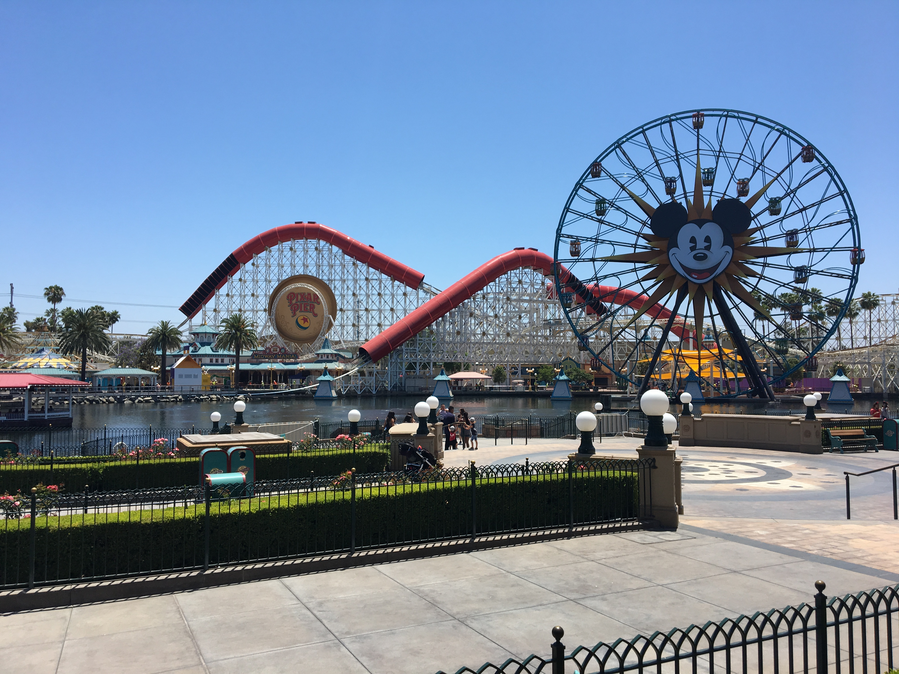

One of my many interests includes attending concerts, specifically pop-punk concerts. I have attended about 90 concerts within the past 12 years approximately. Some of these shows have even taken me to places I've never been, for example Madison, or don't get to visit that often such as Portland. Once I began avidly attending concerts at the conclusion of my senior year of high school, I instantly just fell in love with the atmosphere and the energy that came alongside live music. There's nothing really that can compare to seeing or meeting your favorite band live for the first time. Something about live music just hits differently to listening through a stereo or headphones.
Another one of my interests include being a huge fan Harry Potter. Harry Potter has been a major part of my life for as long as I can remember. It was something I had in common with my dad and was able to bond with him over. Harry Potter has brought me so many friends and experiences that I wouldn't change for the world. I remember when I first started reading the books and being so enthralled by this world that J.K. Rowling had created and to see it come to life on the big screen was, no pun intended, magical.
Disney is also a very large part of my life. I love anything Disney, such as Marvel, classic Disney, new Disney, going to the parks, etc. Growing up watching the old cartoon Disney movies like The Lion King and Tarzan really started the spark that created my love of Disney. I love when I'm able to go to Disneyland and experience the magic that is a Disney park. Doing this allows me to just be myself and to continue being a kid at heart and do what I love.

Photography is a new interest of mine. I've recently started to get more into taking photos and have found it's something I actually really enjoy. I love getting to mess around with filters and apps on my phone and enhance a picture to create something that can be truly beautiful.